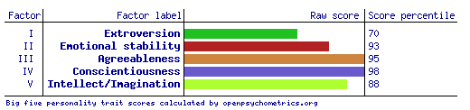
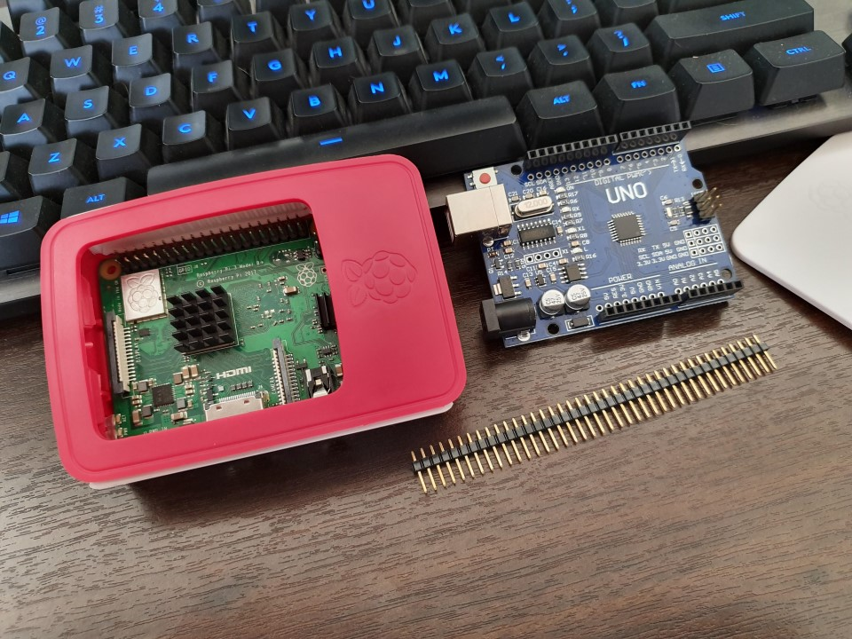

Team SWELDD
Introduction to IT, Assignment 2
Team Members
Personal Information, Profile and Ideal Jobs
Francis Dharmasiri
Student Number: s9356452
I am a Sri Lankan born Australian.
I migrated to Australia in 1990 and lived in Melbourne from then to 2010. now I
live in Bunbury, WA. I have 3 children and I am a proud grandpa of 6
grandchildren all of whom live in Melbourne.
I started my work in Australia in the hospitality industry and eventually
in year 2000 started a company in facilities management that I am managing to
date.
My hobbies are mainly reading, and my favourite topic is Philosophy, but I
like keeping in touch with all the developments in the field of computing
including software and hardware. I have been interested in the field from the
time BASIC (Beginners All Purpose Symbolic Instruction Code) language came out
in the 80’s. I am glad that now I have some time to pursue that interest in IT
and do this degree in IT for my personal satisfaction and If possible to do
some contract work in the field of systems security and penetration
testing.
www.francis-rmit.github.io
Myers-Brigs Style Test
My Type INFP
Introvert(19%)
iNtuitive(88%)
Feeling(25%)
Perceiving(12%)
You have moderate preference of Introversion over Extraversion (19%)
You have strong preference of Intuition over Sensing (88%)
You have moderate preference of Feeling over Thinking (25%)
You have slight preference of Perceiving over Judging (12%)
INFPs never seem to lose their sense of wonder. One might say they see life
through rose-colored glasses. It's as though they live at the edge of a
looking-glass world where mundane objects come to life, where flora and
fauna take on near-human qualities.
INFPs are not exempt from the same disappointments and frustrations common
to humanity. As INTPs tend to have a sense of failed competence, INFPs struggle
with the issue of their own ethical perfection, e.g., performance of duty for
the greater cause. An INFP friend describes the inner conflict as not good
versus bad, but on a grand scale, Good vs. Evil. Luke Skywalker in Star Wars
depicts this conflict in his struggle between the two sides of "The Force."
Although the dark side must be reckoned with, the INFP believes that good
ultimately triumphs.
Some INFPs have a gift for taking technical information and putting it into
layman's terms. Brendan Kehoe's Zen and the Art of the Internet is one example
of this "de-jargoning" talent in action.
(INFP stands for Introvert, iNtuitive, Feeling, Perceiving and represents
individual's preferences in four dimensions characterising personality type,
according to Jung's and Briggs Myers' theories of personality type.)
Source: Humanmetrics.com. (2019). Personality test based on
C. Jung and I. Briggs Myers type theory. [online] Available at:
http://www.humanmetrics.com/personality/infp-type?EI=-19&SN=-88&TF=-25&JP=-12p
[Accessed 05 Oct. 2019].
Big 5 Personality Test

Source: Openpsychometrics.org. (2019). Big Five Personality
Test. [online] Available at: https://openpsychometrics.org/tests/IPIP-BFFM/results.php?r=3.5,4.2,5,5,4.6
[Accessed 05 Oct. 2019].
How this will help the group
The results of the online test will reveal to
the group about my personality it's strong points and week points thus helping
them to know me better to interact and work with me better. I think
these tests are a good general purpose indicator for employers and others
to know why a person is the way they are.
Ideal job
My ideal job would be to be a Systems Securty analist in order
for me to achieve this I will need to complete the Information technology Degree
that I have currently undertaken and then do many more Study programs including
CompTIA Cyber security analist + Certification, in order for me to meet the criteria needed as discribed below
Create specific protocols that audit file changes such as updates, deletion, additions and moving
Penetration testing and monitoring of digital assets
Risk analysis to identify any security issues that could lead to lost or stolen data
Monitoring security alerts to patch software such as operating systems with the latest versions
Prevent intrusions using current security hardware and software
Identify security breaches and take action to stop them and prevent them in the future
Implement the right software and hardware into current and future network environments
Define enterprise level security policies and actively enforce these procedures
Train employees to understand security and implement the right strategies
Work with law enforcement and vendors to manage security threats
After the compleation of study I will then need to forcaus on gaining hands on experience
in dealing with the above criteria in a real working environment.So it's a long journey to achieve
this goal.
How ever it is not my desire to obtain a full time job but to be able to secure contract work.
Like in the examples blow.

HTML cyber-security-jobs/
Jordan Draganoff
Student Number: S3818714
Hi, my name is Jordan. I was born in the late 1990’s and grew up in the large
country town of Bundaberg, Queensland. I enjoy an active lifestyle and love to
travel, hike and go jet-skiing. I graduated high school in 2013 and have been
working in my parent’s business in the areas of sales, marketing and web
development to name a few. In 2018, I decided to pursue my dream and started on
my journey to become an IT professional.
Myers-Briggs Style Test
Extroversion>Introversion by 12%
Sensing>Intuition by 3%
Thinking>Feeling by 47%
Perceiving>Judging by 3%
Source: Humanmetrics.com. (2019). Personality test based on
C. Jung and I. Briggs Myers type theory. [online] Available at:
http://www.humanmetrics.com/cgi-win/jtypes2.asp [Accessed 10 Sep. 2019].
Learning Styles Test
Auditory: 20%
Visual: 40%
Tactile: 40%
Source: Humanmetrics.com. (2019). Personality test based on
C. Jung and I. Briggs Myers type theory. [online] Available at:
http://www.humanmetrics.com/cgi-win/jtypes2.asp [Accessed 10 Sep. 2019].
Big 5 Personality Test

Source: Openpsychometrics.org. (2019). Big Five Personality
Test. [online] Available at: https://openpsychometrics.org/tests/IPIP-BFFM/
[Accessed 10 Sep. 2019].
The results of the online tests outline that I’m a visual/tactile learner,
have high emotional stability and have a preference for thinking rather than
feeling. These results point out that while I do have good emotional stability,
I may struggle with understanding others emotions. The results such as my
preference for extraversion and agreeableness indicate that other team members
would be happy with my behaviour as part of a team. When forming a team, it
would be beneficial to find other members with a similar learning style of
visual/tactile as this would likely affect communications preferences and
sharing of useful resources throughout the group.
Suki
My name is Susika ‘Suki’ Sumanasuriya, student number: S3620271.
I was born in Sri lanka but migrated to Australia when I was 12, I am bilingual
and can speak 2 languages (english & sinhala), my favorite pastime includes
watching tv shows & movies. My interest in IT has been a lifelong obsession,
ever since I was a kid, I always had a particular interest in technology over
other things. I currently have no actual experience in IT apart from the IT
electives i took during my grade school years. I am very happy to be part of
the SWELD group, and hope to do the very best.
Test results
Myers-Briggs test
Personality type: "The Advocate" (INFJ-T) Individual traits: Introverted - 81 %
Intuitive - 91 %
Feeling - 56%
Judging - 64%
Turbulent - 75%
Role: Diplomat
Strategy: Constant Improvement
Learning style test
• Auditory: 40%
• Visual: 30%
• Tactile: 30%
If you are an auditory learner, you learn by hearing and listening. You understand and remember things you have heard.
You store information by the way it sounds, and you have an easier time understanding spoken instructions than written ones.
You often learn by reading out loud because you have to hear it or speak it in order to know it.
As an auditory learner, you probably hum br talk lo yourself or others if you become bored. People may think you are not paying
attention. even though you may be hearing and understanding everything being said.
Here are some things that auditory learners like you can do to learn better.
Have your hearing checked on a regular basis.
Use flashcards to team new words: read them out loud.
Read stories, assignments, or directions out loud.
Record yourself spelling words and then listen to the recording.
Have test questions read to you out loud.
Study new material by reading It out loud.
Remember that you need to hear things, not just see things, in order to learn well.
How this will help the group
These tests have shown what my true personality is, it’s something I have never directly
contemplated about but i think these personality tests will prove useful when I am working in
a team environment, for example the career test prove that my need for leadership is low but
my need for organization is high so my role in a team could include helping to organize the
necessary objectives in regards to solving a problem.
Ideal job
My ideal job would be to someday be a Research Scientist specialising in Machine Learning like
the advertisement posted at seek.com.au (Link and Spashot is below). The position is meant to
help device novel techniques powered by Machine Learning algorithms to explore minerals and
metals in a much more sustainable way. This role requires the researcher to have at least 4 years
of experience in researching novel machine learning algorithms, preferably a Masters in Computer
Science and expert level proficiency in a variety of programming languages. Inorder for me to
qualify for this job I would have to finish two courses I am currently studying (IPT and ITT),
and then finish the Bachelors in Information Technology, afterwards find a junior research job
and get a Masters in Computer Science as i am doing my job and then hopefully in a half decade
I would qualify for this job.
Sophie
Chris Evans
Student Number: S3813726
My name is Chris Evans (RMIT Student number S3813726), I am 32 years old and live
in Newcastle NSW. I have a beautiful wife (Caroline), a nine-month-old son (Austin)
who keeps us very busy and a dog (Leo). My hobbies include sports such as baseball,
golf and touch football. I also dabble in amateur home brewing, barbecuing, gardening, fishing and camping.
I am currently trying to involve myself in any kind of climate change and renewable energy movements I can.
I feel strongly about reducing the adverse effect we are having on the environment and have a personal goal
to be involved in making a difference. My interest in IT began in high school in 2003 where I did my first
computing studies. I then pursued a career involving IT as an Electronic Communications Tech in the Air Force
for over 13 years I have progressed through the organisation from being a hands-on technician to a technical
workforce manager. The further I progress in my career, the more managerial roles I undertake and the less
technical knowledge I retain. I am studying IT to increase my knowledge and understanding of all things IT
and in the process, limiting my skill fade. I am hoping to find a way to combine my interest of IT into my
aspirations of environmental change. Whether that is through green energy technology advancements, sustainability
with automation or networking household energy storage; only the future will tell.
My test results
Myers-Briggs result – Protagonist ENFJ-T
Learning Style – Visual 45%
Creativity – Ability to carry large quantities of information and manage effectively, desire to change the accepted
norm and to push for continual improvement.
How this will help the group?
The results of my tests indicate that I need to be open and accepting of team
feedback and take this on board for future interactions. I also should start as soon as I can when making big
decisions as I can lose confidence if time gets away from me. I digest things better if they are visually intuitive
and I like logical information structure to ensure I can comprehend our progress.
Ideal jobs comparison and contrast
Jordan - Business Analyst
Francis - Systems Security Analyst
Suki - Research Scientist in Machine Learning
Sophie - Data Analyst
Chris - Project Developer
Ideal job Question?...
What common elements are there, if any? There is a common theme of Analyst across three of our members. All roles
are different and across varying fields.
What differentiates each position from the others, if anything? The industry that the individual has an interest
in seems to be the differentiating factor.
How similar or different are your career paths across the group? The career paths are vastly different from each
other, this shows the diversity that the IT industry offers.
Tools
GitHub repository:
www.github.com/Sweldd/sweldd.github.io
communications:
Discord
Group report :
Canvas / GoogleDocs.PDF
Industry Data
What are the job titles of your groups ideal jobs?
Jordan - Business Analyst
Francis - Systems Security Analyst
Suki - Research Scientist in Machine Learning
Sophie - Data Analyst
Chris - Project Developer
How do each of these rank in terms of demand from employers?
Jordan - 165 job listings
Francis - 173 job listings
Sophie - 45 job listings
Suki - 58 job listings
Chris - 278 job listings
From your groups ideal jobs, can you identify a set of skills required for these jobs?
General skills:
Analytical skills
Research
Communication Skills
IT specific skills:
Microsoft Windows
Project management
Business Analysis
How do IT-specific skills in your required skill set rank in terms of demand from employers?
Our IT-specific skills are all in the top 10 skills in demand from employers. We have two skills in the top 5. We consider that to be quite beneficial for our future careers.
How do the general skills in your required skill set rank in terms of demand from employers?
Our general skills come in at number 1, 10 and 17. This seems to be an even spread with highly sought-after skills and skills that aren’t so desired.
What are the three highest ranked IT-specific skills which are not in your required skill set?
SQL, Javascript and JAVA.
What are the three highest ranked general skills which are not in your required skill set?
Problem Solving, Organisational skills and writing skills.
Having looked at the Burning Glass data, has your opinion of your ideal job changed? Why or Why not?
No, while there are some good and not so good aspects of the skills in demand for our job roles, we consider our skills a good mix across the board. It could be very rare
to require all the top-ranking skills and in some cases, you might need all of the top-ranking skills. It depends on the unique role that you go for. When it comes down to it,
we all want to do what we are passionate and interested in doing. The Burning Glass data is handy; it has not changed our opinion of our ideal jobs.
IT Work
Interview an IT professional.By Suki.
1 .Please tell us about your IT work. What exactly do you do?
I work as an IT Specialist. My work consists of a range of various projects of which primarily
focus on the development and implementation of systems to replace old systems to allow for more
simplification and automation. This is because the old systems mostly consist of older command
line interfaces.
2. Please tell us about the industry you work in.
I work for an IT multinational corporation known as IBM. This company primarily offers cloud
computing services which consists of a range of services from database storage to artificial
intelligence like machine learning. The company also provides other services such as leasing
equipment to smaller companies.
3. What other kinds of work do you have to do?
I am undergoing a project administrator role for a part-time project. This is where I am in charge
of organizing meetings, allocating tasks and creating meeting minutes. Meeting minutes are a
summary of what happened during a meeting and of what each individual has completed since the
meeting prior to the current one. This is done on Atlassian’s JIRA.
4. Who are the different people you interact with in your work? Please tell us about them.
So far I have interacted with a few members of the small team that I work with. I have interacted
with project managers, business analysts, software developers and database administrator. The
current team is part of the support team representing the system that is currently used.
This is for the Asia Pacific region. Because of this I have also interacted with people from
Malaysia who were similar roles as previously mentioned.
5. Please tell us about your interactions with other IT professionals
My interactions primarily consist of the team I work with for the past projects. These
professionals have had various personalities who all work differently. For example, some have
had excellent time management whilst others have lacked in time management.
6. What about your interactions with clients or investors?
I have had no interactions with clients or investors. I have only had interactions with my current
team and other teams of whom I have helped produce new functions for.
7. What aspect of your work do you spend the most time on? Please tell us about these.
As the agile methodology consist of working on iterations, this would consist of designing, developing
and testing the iterations. Primarily, the development side will be what I work on the most.
This section involves producing the system that was initially designed.
8. Which aspects of your work do you find most challenging?
The most challenging aspects of work would have to be the development phase of some projects as
this involves coding. Coding can consist of many bugs or errors that can occur in which I have to
find the solution to fixing it or checking stack overflow for assistance.
9. Finally, can you share an example of the work you do that best captures the essence of the IT
industry?
What best captures the essence of the IT industry would have to be working with individuals who
seek a piece of software to be produced and working with developers in order to produce that
software. In my experience, this would consist of using data visualisation to produce dashboards
for which other teams will use to allow for simplification. This involved me interacting with the
product owner – of whom represents what the end users would like in the dashboard.
What kind of work is done by the IT professional?
The IT professional works as an IT Specialist, he works for an IT multinational corporation
known as IBM. This company primarily offers cloud computing services which consists of a range
of services from database storage to artificial intelligence like machine learning. The
company also provides other services such as leasing equipment to smaller companies.
His work consists of a range of various projects of which he primarily focuses on the
development and implementation of systems to replace old systems to allow for more
simplification and automation. This is because the old systems mostly consist of older
command line interfaces. He is currently partaking in a project working as a project
administrator, he is in charge of organizing meetings, allocating tasks and creating meeting
minutes. Meeting minutes are a summary of what happened during a meeting and of what each
individual has completed since the meeting prior to the current one. This is done on
Atlassian’s JIRA.
What kinds of people does the IT professional interact with?
He interacts with a few members of the small team that he works with. He has interacted with
project managers, business analysts, software developers and database administrator. The current
team is part of the support team representing the system that is currently used. This is for
the Asia Pacific region. Because of this he has also interacted with people from Malaysia who
were similar roles as previously mentioned. His interactions primarily consist of the team he
works with for the past projects. These professionals have had various personalities who all
work differently. For example, some have had excellent time management whilst others have
lacked in time management. He has had no interactions with clients or investors. He only
had interactions with the current team and other teams of whom he helped produce new
functions for.
Where does the IT professional spend most of their time?
As the agile methodology consist of working on iterations the professional spends most of his
time working on iterations, this would consist of designing, developing and testing the
iterations. Primarily, the development side is what he works on the most. This section involves
producing the system that was initially designed.
What aspect of their position is most challenging?
The most challenging aspects of work for the professional would have to be the development
phase of some projects as this involves coding. Coding can consist of many bugs or errors
that can occur in which he has to find the solution to fixing it or checking stack overflow
for assistance.
What does the Professional think of the IT industry.
According to the professional what best captures the essence of the IT industry would have to
be working with individuals who seek a piece of software to be produced and working with
developers in order to produce that software. In his experience, this would consist of using
data visualisation to produce dashboards for which other teams will use to allow for
simplification. This involved him interacting with the product owner – of whom represents
what the end users would like in the dashboard
IT Technologies
Graphics
Graphic Technologies By Francis Dharmasiri
Graphic technology is a huge industry and one of the largest in the world.
Over the past decade we have seen this industry grow exponentially in the
areas of Software as well as hardware giving us the capability to create
realistic visual imagery be it in the form of cinema, gaming, virtual reality
augmented reality and the ongoing research into holography.The biggest contributing
factor in its current development is due to the unprecedented development in graphic
processors and random-access memory. When we take these into consideration it is hard
not to acknowledge two companies that have contributed largely to its momentum in
growth and those companies are NVidia and AMD graphics. Due to their ferocious
competitiveness with each other we have been able to enjoy some of the best technologies
base on hardware, however hardware alone will not contribute to the visual graphic
capabilities that we currently possess.
It is fair to say that the strides we have made in the are of Graphical software
is mainly due to the popularity of games as well as the scientific
research and development that demands innovation and new capabilities.
Gaming Software
Unreal Game engine by epic games
If you want to develop an epic game you might probably want to use this game engine,
considered one of the best game engines in the word and created using C++ programming
language It has all the necessary features built into it. A 3D game engine with Terrain,
Physics and all other features that you need to create graphics that mimic reality.
This game engine may not be suitable for small games as it also needs high end hardware
like Nvidia GeForce RTX2080 Turing with ray tracing to get the optimal capabilities
of the game engine. An excellent example what current high-end software and hardware can do.
Platforms: Windows, Linux, iOS, Android, PlayStation, Xbox and more
games created: Marvel Heroes, Batman: Arkham Origins, Infinity Blade 3, WWE Immortals and more.
Some of the other software for gaming include but not limited to Unity based on programming
language C#, Godot written in C, C++ and C# with GDNative bindings such as Rust, D , Nim or
using it’s own scripting language GD Scripts a high level , dynamically typed programming
language like Python.
But we also need to have a look at other very essential software that is used in the graphic
creation space like Autodesk Maya, Photoshop, 3DS Max to mention a few these software’s normally
used for creation of commercial products in specific areas including Movies like Nemo and other
popular graphic based characters that we see in movies like Transformers just to mention a few.
Medical Imaging.
Graphic technology is not limited to entertainment as I mentioned previously, the industry’s
growth was influenced by our need to innovate graphical capabilities for more essential needs
like in the area of Health. This imaging technology is mainly based on Computed Tomography,
Magnetic Resonance Imaging, Positron Emission Tomography and Phase-Contrast and Proton CT to name a few.
The latest software and hardware developments in this field is also spear headed by Nvidia.
Recently they have developed a platform of hardware and software incorporating artificial intelligence known
as Nvidia Clara Platform. This software kit will give the developers to apply a wide range of AI powered
applications to existing medical imaging equipment that I mentioned above.
Nvidia is not the only company that is making innovation’s in this area of medical Imaging.
For example, Deep learning start-up Aidoc has created a software platform that can use AI to analyse
Computed Tomography (CT Scan) for comprehensive full body Technology.
Also, the Deep learning company Subtle medical who is a member of Nvidia’s Inception virtual
accelerator program is aiming to create a MRI machine that acquires images in quarter of the
time while requiring just 10% of the contrast dosage to patients.
In conclusion I must mention that I have not even touched on the subject of Hardware and other
aspects that cover the area of Graphic Technologies that span the whole IT industry and incorporates
every aspect of it, a comprehensive look at the industry may fall under writing a book about it
and may not be within the scope of a article.
Graphics.pdf
Machine Learning
What does it do?
What is the state of the art of this new technology?
Machine learning enables machines to acquire new skills by analysing copious amounts of data
and looking for patterns within those data, this essentially makes them better at a task simply
through trial and error. This is made possible by giving a machine training and testing sets
(data) of the very thing we would want a machine to be better at, an example could include
facial recognition; through machine learning a machine can learn from the two sets, one set
(the training set) to sift through to look for patterns within the data, in this case the
data could be faces of random individuals and another set (the testing set) could include
an extra set of people completely separate and unique from the training set to verify
those new found patterns, if for some reason the verification comes to a halt,
the machine learning algorithm makes an automatic adjustment to its own algorithm and tries
again till it gets better over time through trial and error and eventually if the algorithm
is upto the task, after the initial training period the machine should be able to recognize
different faces.
What can be done now?
Currently one of the uses of machine learning algorithms includes the enhancement of the
customer experience for example some enterprises use machine learning powered chat-bots that
has been trained on different so called chat-bot datasets to provide its customers
efficient and quick self - service without the need for staff based service, and as
the technology matures it is said that more businesses both large and small will adopt
this technology for the benefits of efficiency and cost saving.
What is likely to be able to do be done soon (say in the next 3 years)?
According to some computer scientists, machine learning algorithms would soon be able to
generalize its abilities in detecting patterns as the current methods requires an enormous
amount of data to excel at specific singular tasks (i.e. chatbots), if an algorithm can
generalize its learned abilities from one data set to another ( i.e. reading) it will be
a more efficient use of resources and ability. Also current learning algorithms are prone
to so called adversarial attacks where simulated signals implanted within the data set
can trick the algorithm and could cause it to malfunction, it is hoped that solutions
for these types of attacks will be designed within the next couple of years.
What technological or other developments make this possible?
On a technical level, more processing power in the near future should aid machine learning
algorithms to generalize its abilities, as well as advances in data storage and management,
this will aid in further understanding of the depth of current data-sets and this will
enable researchers to extrapolate relations between different tasks so they can design
much more proficient and generalizable algorithms. As for adversarial attacks better
more robust algorithms will have to be implemented, it is said that by embedding human
biases into these algorithms it could help machine learning algorithms to identify these
signals and purge them out of the data-set before any malfunction occurs, although for
the time being this method is unproven for the most part.
What is the likely impact?
Advanced machine learning algorithms could have profound impacts on the job market as
algorithms begin to replace human workers, for example in the United States, the increase
in automation over manual labour is on pace to take close to 35% of jobs within the next
couple of decades, also according to some economists the economic benefit gained by
implementing these new and novel technologies will only benefit the rich as the monetary
benefit in cost saving and efficiency won’t necessarily trickle down. While the majority
of the workforce will still be employed in 20 years, the creation of new jobs will
slowly stagnate noticeably as attrition gradually leads to fewer people in the
workplace, this could in turn make economic inequality worse and further divide the gap
between the poor and the rich. According to a report published by ONS
(Office of National Statistics) of England, 3 most at risk jobs are waiters,
shelf fillers and elementary sales occupations.
How will this affect me?
As according to what is mentioned above, this technology will displace many people in the
workforce in turn possibly disrupting the financial and or economic livelihood of many people.
According to some researchers machine enabled job loss could have profound socio economic
issues that is hard to predict, and some tech leaders such as elon musk has gone far as
to recommend a Universal Basic Income or UBI to guarantee these displaced people a livable
wage. It is yet to be seen how these advanced algorithms will affect the economy.
Robots
By Sophie.
Robots are machines capable of completing complex series of actions automatically.
They can be guided by external programming or the programming can be embedded within
and can be used autonomously or semi-autonomously, ranging from humanoids through to
medical operating robots, therapy robots and also for the military. With the different
uses for robots, the continual developments being made in robotics vary greatly, such
as the TOSY Ping Pong Playing Robot, the advances in military equipment like Unmanned
Aerial Vehicle drones and the emerging nanorobotics. With various methods such as,
evolutionary robotics, where a number of different robots are submitted to testing
and those with the best performance are submitted as a model to create subsequent
“generations”, as well as developmental robotics, which involves the tracking of changes
and developments within a single robot in the areas of problem-solving and other
functions. According to a Forrester report, ‘robots will eliminate 6 percent of
all jobs in the United States by 2021. McKinsey’s assessment on the matter is
more extensive, with them believing that by 2030 one third of American jobs
could be more automated. According to a new report in 2019 by Oxford Economics,
“How Robots Change the World”, up to 20 million manufacturing jobs could be
lost to robots by 2030, in line with the assessments made by McKinsey.
The report suggests that in Australia, South Australia is most vulnerable
to the future robot rollout.
Although there are a significant changes in society that robots will
influence in the future, there will also be new careers and fields of technology that
will evolve as a result. With the advancements in medical and rehabilitation robots,
researchers at Carnegie Mellon were able to experiment with millimetre sized robots to
perform heart surgery, and engineers at Autodesk were also able to help medical researchers
to develop nano-robots that could be injected into cancer patients to kill
cancer cells.
Raspberry Pis, Arduinos, Makey Makeys and other small computing devices
By Jordan Draganoff

A Raspberry Pi and Arduino UNO
Device. Source: Self
Project Ideas
Our group had a variety of ideas for projects from assessment one in Introduction to
Information Technology.
Jordan came up with a remote animal interaction device to entertain a cat while the owner
was not at home. While he has expressed that he is not a ‘cat person’, it was a humorous
read that made what could have been a boring project, enjoyable.
Suki went all out and provided a futuristic project by means of a ‘Carbon Dome’ capable of
sustaining life on mars! He mentions important aspects such as how the Dome will be powered
and how CO2 will be broken down.
Chris aimed for a sustainability inspired plant management system with remote monitoring
capability. He was attempting to implement solar power as the power source and make amendments
to the software on the fly.
Noting that this portion of the assignment emphasises problems that need to be solved, we
will come back to these ideas in just a second.
On a recent holiday, one of our team members had the pleasure of undertaking a nocturnal
wildlife tour of a National Park in Kakadu. The tour guide was a passionate local who spoke
persuasively to the tourists about wildlife and environmental conservation. While he had
the audience captivated with his heavily rehearsed dialogue, he would make reference to
‘the great Sir David Attenborough’ and attributed his knowledge of his ancestral land to
excessive animal planet documentaries he would watch. Throughout the tour he bought the
tourists attention to a cat he observed hunting a group of native birds in some long
grass on the riverbank. He proceeded to regurgitate animal planet facts about feral
and domesticated cats killing on average, about 75 animals per year. He continued to
mention that many of Australian native species can’t withstand these levels of predatorial
domination and will become increasingly at risk of extinction if the matter cannot be
addressed.
This news was saddening to hear and only one aspect of a myriad of environmental statistics
that may see our children not afforded the same wildlife experiences that we take for granted
today.
This also got us thinking, the three ideas mentioned above from assignment one was, Jordan
with his cats, Suki with his Dome’s and Chris with his sustainability aspect. That’s it,
we have our project.
The pure and simple solution that we have for this issue is a ‘Remotely monitored and
self-sustainable, domesticated cat indoor habitat’. This incorporating all three of our
ideas to reduce the impacts of cats hunting native animals outside of the home.
Ideas we have come up with include creating a collar to track the cat’s movements within
the home, heart rate and provide stimulus to the cat when needed. The household ‘dome’
could be managed by robotics or advanced software that would be able to conduct minor tasks
such as, cat monitoring and behavioural cue identification, cleaning of any faecal matter,
stimulating the cat when needed and providing nutrients and water as required. On the
sustainability front, proper promotion and publicising of this project would incite interest
amongst cat owners around the world and in turn be adopted or implemented. The result of
the above points would have a positive impact on the general wellbeing of domesticated cats
and in turn a change to the predatorial impacts that cats have on our native animals.
By far this is not a completely achievable project and it does require some technology
advancements, hardware creating and software building. This is our little crack at tackling
a larger problem with the various ideas that we as a group originally came up with. It has
been an enjoyable topic to address and write about.
Feedback
Group Reflection
Jordan
What went well?
I feel like our chosen collaboration (Google Docs and Github) and communication (Discord)
technology mix worked fairly well for our team, seeming it was our first time collaborating
in this way.
What could be improved?
For future assignments it will be important to improve our organisation in regards to team
meetings. Team meetings should be arranged in advance and documented better so that there
is no confusion about when meeting will be held.
At least on thing that was surprising
I was surprised that we lost a team member very early in the assignment. Our team name was
an acronym of our original team members last names, although we chose to keep it the same
after losing our sixth member.
At least one thing that you have learned about groups
I have learned that all people are different and may prefer to work and communicate in
different ways. Because of this, it is very important for the group to try their best to
accommodate everyone's preferred work and learning styles.
How well the GitHub log reflects the activity of the groups work
For this assignment, the Github log doesn’t necessarily reflect on everyone's actual
contribution to the groups work. This is because we are using other collaboration technologies
as well as Github. We are using Google Docs for our report PDF so that everyone can see and
contribute to the document in real time, instead of using Github ‘pull’ and ‘push’ requests
to get the latest version of the report. Our group website is hosted on Github pages, and
any group member that has contributed to the website code will be acknowledged in the
Github log.
Francis
What went well?
I think our collaboration effort went well , with the tools we chose like Discord
and Google docks. Discord helped us to have our group meetings and the Google Docs
helped us organise our Canvas documentation. And we used the Github repo updating And tracking
our edits as specified in the assignment and to create our website.
What could be improved?
Better communications and understanding of the assignment specifications.
At least one thing that was surprising
Sudden disappearance of a group member
At least one thing that you have learned about groups
I learnt that communications, coordination and being respectful is the key to
a successful and a conflict free group work experience.
How well the GitHub log reflects the activity of the groups work
I dont think that the GitHub log activity will reflect very well on the groups
activity as some of our members were still learning how to use Git, but the
rest of the members were happy to step in and complete the tasks
Suki
What went well?
I feel like all the tasks were assigned without any issues from the very start and
our use of google docs helped us keep track of everyone's submissions under one cohesive
document. I would also like to mention Chris and Jordan for their quick thinking on
how everything should be arranged and delegated, especially the timeline document
created by Jordan helped us keep track of what part of the assignment should be
finished by which date.
What could be improved?
There were some minor communication errors from the start, but as time passed, I
feel like it it got much better but there is still room for improvement.
At least on thing that was surprising
From the very start, almost everyone in our group was very resourceful and
respectful of one another and were very responsible for their respective assigned
tasks. The fact that there were no misunderstandings between the group members was
refreshingly surprising.
At least one thing that you have learned about groups
Communication is the most important element so there are no misunderstandings, I
believe that our group communicated very well but there is room for improvement.
How well the GitHub log reflects the activity of the groups work
I would say GitHub log reflects poorly on our group activity as it does not take
into account the work done on our group Google document.
Sophie
What went well?
What could be improved?
At least on thing that was surprising
At least one thing that you have learned about groups
How well the GitHub log reflects the activity of the groups work
Chris
What went well?
I think as a group we assigned tasks effectively and everyone was willing to put
their hand up and accept responsibility for completing them. We planned for meetings,
gave it our best to make them and if anyone was unable to attend, they would let the
group know prior to the commencement of the meeting. The team made their intentions
clear from the beginning by signing a group charter that sets out the standards we
planned to abide by for our fellow members.
What could be improved?
The group was slow to initiate the assessment planning. There was initial contact
with members but the first meeting and decisions on the collaboration tools were
delayed. Once the group arranged and conducted a meeting on Discord, there was some
confusion and communication issues using voice chat. The issues included, people
speaking at the same time, people not speaking at all and personal IT issues. Another
would be the group meeting its timeline goals to ensure we stick to the plan and have
enough time to finalise the assignment.
At least on thing that was surprising
One surprising thing was that we lost a team member in the early stages and had to
manage the workload with five members.
At least one thing that you have learned about groups
One thing I have learned about groups is to break the ice and get the team together
for an initial meeting.
How well the GitHub log reflects the activity of the groups work
I don’t think it tracks it well at all.
GitHub is only one aspect of the assignment and is the online repository of all of our
work. As a team, we utilised Google docs, Canvas, Discord and GitHub. We have multiple
documents that members have contributed to with online discussions in Canvas and on
Discord that is not tracked in GitHub. I think GitHub accurately tracks the contributions
of the members uploading the data to the site. To mitigate this issue, we tried running a
GitHub demo for some of our less experienced members and this helped spread the load on the
more experienced members.